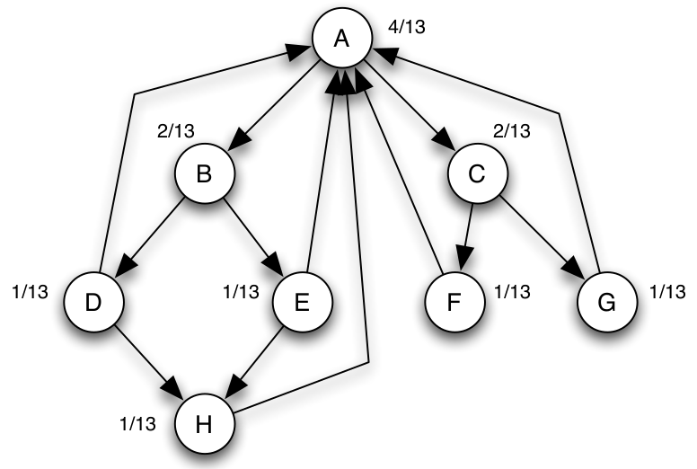
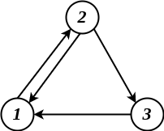

AR - Lesson 19
PageRank
Mentre con l'algoritmo HITS la rilevanza di una pagina dipende da quante pagine è putanta e a quante punta, esistono contesti in cui la rilevanza non dipende dal numero bensì dalla qualità dei link.
Ovvero ci sono situazioni in cui l'approvazione è vista come un passaggio diretto da una pagina importante ad un'altra.
Per esempio, se un articolo X molto importante cita un articolo Y, allora Y prenderà rilevanza.
Simmetricamente, se X cita molti articoli importanti allora probabilmente il suo contenuto sarà rilevante per la ricerca.
Questo concetto è quello su cui si basa l'algoritmo PageRank per determinare la rilevanza delle pagine rispetto a una ricerca.
Tale modello prende il nome da Larry Page, fondatore di Google da cui il nome.
Tale algoritmo è ancora una volta un metodo iterativo, basato però sull'analisi dei soli link entranti in una pagina.
Ovvero solamente i link che puntano ad una pagina X saranno utili per definirne la sua rilevanza.
Tale algoritmo parte dall'assunzione che nella porzione di rete attinente alla ricerca sia presente una unità di flusso inizialmente distribuita in maniera equa fra tutti i nodi,
ovvero se ci sono \(n\) allora inizialmente ognino possiede frazione \(1/n\) di flusso.
In maniera intutitva, durante le iterazioni dell'algoritmo, ogni nodo redistribuisce la propria frazione di flusso alle pagine che punta.
Alla fine, dopo un certo numero di iterazioni, la pagina che avrà una frazione più alta sarà quella più rilevante per la ricerca.
Formalmente indichiamo con
\[
f^{(0)}_i = \frac{1}{n}
\]
la quantità iniziale di flusso del nodo \(i\)-esimo, per \(i=1,...,n\).
Ad ogni passo, ogni nodo redistribuisce la propria quantità di flusso lungo i suoi archi uscenti in maniera uniforme.
Perciò avremo che
\[
f^{(k+1)}_i = \sum_{1 \leq j \leq n :\\j \rightarrow i} \frac{f^{(k)}_j}{d^{(out)}_j}
\]
dove \(d^{(out)}_j\) indica il grado uscente di \(j\), ovvero il numero di nodi puntati da \(j\) all'interno del sottografo indotto dalle sole pagine inerenti alla ricerca.
Per notazione indichiamo con \(f^{(k)} = (f^{(k)}_1, ..., f^{(k)}_n)\) il vettore delle quantità di flusso degli \(n\) al tempo \(k\).
Se il sottografo indotto dalle pagine attinenti alla ricerca è fortemente connesso allora esiste ed è unico il limite \[ \lim_{k \rightarrow \infty} f^{(k)} = f^* \]
Sotto l'assunzione di connessione forte, è facile osservare che la quantità di flusso globale rimane sempre 1.
Possiamo quindi pensare al limite \(f^*\) come una configurazione di equilibrio in cui \[ f^*_i = \sum_{1 \leq j \leq n :\\j \rightarrow i} \frac{f^*_j}{d^{(out)}_j} \;\;\; \forall i=1,...,n \]

Figura 1: Configurazione di equilibrio \(f^*\) (porvare per credere).
Ovviamente la condizione che il grafo sia fortemente connesso è necessaria per il correto funzionamento, in quanto se non fosse fortemente connesso tutto il flusso andrebbe a finire tutto in componenti pozzo.
Perciò è necessario modificare opportunamente il PageRank per evitare tutto il flusso si accumuli in componenti pozzo.
Una versione modificata è il noto Scaled PageRank nel quale ogni pagina preserva un propria porzione di flusso per evitare che tutto si accumuli nei "vicoli ciechi".
Più precisamente, fissato un parametro \(s \in \left[ 0,1 \right]\), e ad ogni iterazione:
- una frazione \(s\) del flusso di ogni nodo viene redistribuito uniformemente sugli archi uscenti come nel PageRank calssico.
- mentre la frazione rimanente \((1-s)\) di ciascun nodo viene ridistribuita sul tutto il grafo in maniera uniforme.
Percò, dato che il flusso globale di tutta la sottorete è sempre 1, avremo che ad ogni iterazione ogni nodo riceverà una quantità di flusso di almeno \((1-s)/n\).
Per distiguere, indichiamo con \(r^{(k)}_i\) la quantità di flusso posseduta dal nodo \(i\) all'iterazione \(k\) nello Scaled Page Rank.
D'ora in avanti ci riferiremo ad esso con il termine di rank, e non più di flusso.
La formula ricorsiva per calcolare il rank di un nodo al tempo \(k+1\) è
\begin{equation} r^{(k+1)}_i = \Big( \sum_{1 \leq j \leq n :\\j \rightarrow i} s \cdot \frac{r^{(k)}_j}{d^{(out)}_j} \Big) + \frac{1-s}{n} \end{equation}Dato un vettore di ranking \(r^{(k)} = (r^{(k)}_1, r^{(k)}_2, ..., r^{(k)}_n)\) la tempo \(k\), difiniamo con \(N\) la matrice \(n \times n\) che descirve il processo iterativo, ovvero tale che \[ r^{(k+1)} = N r^{(k)} \]
Per definizione la matrice \(N\) è definita come segue \[ N [ i,j ] = \begin{cases} \frac{s}{d^{(out)}_j} + \frac{1-s}{n} &\mbox{se } j \rightarrow i\\ \frac{1-s}{n} &\mbox{altrimenti} \end{cases} \;\; \forall 1 \leq i,j \leq n \] Infatti avremo che il ranking \(i\)-esimo di \(r^{(k+1)}\) sarà
\begin{align*} r^{(k+1)} = \sum_{j = 1}^{n} N [ i,j ] r^{(k)}_j &= \bigg( \sum_{1 \leq j \leq n :\\ j \rightarrow i} \Big( \frac{s}{d^{(out)}_j} + \frac{1-s}{n} \Big) r^{(k)}_j \bigg) + \bigg( \sum_{1 \leq j \leq n :\\ j \not\to i} \frac{1-s}{n}r^{(k)}_j \bigg)\\ &= \bigg( \sum_{1 \leq j \leq n :\\ j \rightarrow i} \frac{s}{d^{(out)}_j}r^{(k)}_j \bigg) + \bigg( \sum_{j = 1}^{n} \frac{1-s}{n}r^{(k)}_j \bigg)\\ &= \bigg( \sum_{1 \leq j \leq n :\\ j \rightarrow i} \frac{s}{d^{(out)}_j}r^{(k)}_j \bigg) + \frac{1-s}{n}\underbrace{\bigg( \sum_{j = 1}^{n} r^{(k)}_j \bigg)}_{\scriptsize{\mbox{tutto il flusso}}}\\ &= \bigg( \sum_{1 \leq j \leq n :\\ j \rightarrow i} \frac{s}{d^{(out)}_j}r^{(k)}_j \bigg) + \frac{1-s}{n} \end{align*}
ovvero la definizione data nell'eq. (1).
Anche in questo caso possiamo pensare al vettore \(r^*\) che definisce una configurazione di equilibrio, ovvero tale che \[ r^* = Nr^* \]
Osserviamo che \(r^*\) (se esiste) è un autovettore di \(N\) con le seguenti proprietà:
- il rispettivo autovalore è \(\lambda = 1\).
- la somma degli elementi di \(r^*\) è pari a 1.
- ha tutti elementi non negativi.
- possibilmente che \(r^*\) è l' unico autovettore con tali prorpietà (così da avere un unico punto di convergenza).
Ma chi ci assicura che tale autovettore (con relativo autovalore) esista?
Teorema di Perron
Sia \(A\) un matrice \(n \times n\) con valori reali positivi, allora
- \(A\) ha un autovalore \(c \in \mathbb{R}^+\) tale che \(c > \vert c' \vert\) per ogni altro autovalore \(c'\) di \(A\).
- l'autovettore di \(A\) corrispondente a \(c\) è unico ed ha elementi reali positivi la cui somma è pari a 1.
La nostra matrice \(N\) rispetta tali condizioni, perciò possiamo applicare il teorema di Perron e dire che esiste una coppia autovalore-autovettore \((r^*, c)\) che rispetta le porprietà.
Se potessimo anche essere certi \(c = 1\) potremmo concludere che \(r^* = N r^*\).
Per fortuna esiste un teorema che ci viene in salvo.
Teorema
Sia \(A\) una matrice stocastica, ovvero una matrice quadrata \(n \times n\) la cui somma degli elementi su ciascuna riga (o colonna) è pari a 1. Allora \(A\) ha un autovalore \(\lambda\) tale che \(\lambda = 1\) e \(\lambda\) è l'autovalore di modulo massimo.
Osserviamo che \(N\) è una matrice stocastica per colonne. Infatti, poiché è vero che fissato un nodo \(j\) avremo che \[ \sum_{1 \leq i \leq n :\\ j \to i} \frac{1}{d^{(out)}_j} \] (convincersi di questo prima di proseguire) allora
\begin{align*} \sum_{1 \leq i \leq n} N [ i,j ] &= \Big( \sum_{1 \leq i \leq n :\\ j \to i} \frac{s}{d^{(out)}_j} + \frac{1 - s}{n} \Big) + \Big( \sum_{1 \leq i \leq n :\\ j \not\to i} \frac{1 - s}{n} \Big)\\ &= \Big( \sum_{1 \leq i \leq n :\\ j \to i} \frac{s}{d^{(out)}_j} \Big) + \Big( \sum_{1 \leq i \leq n} \frac{1 - s}{n} \Big)\\ &= s + (1-s) = 1 \end{align*}In conclusione per il teorema di Perron e per quello sulle matrici stocastiche averemo che l'algoritmo Scaled PageRank converge ad un punto fisso \(r^* = Nr^*\).
Esempio Matrice Stocastica
\begin{equation*} N = \left [ \begin{array}{ccc} \frac{1-s}{3} & \frac{s}{2} + \frac{1-s}{3} & s +\frac{1-s}{3}\\ s + \frac{1-s}{3} & \frac{1-s}{3} & \frac{1-s}{3}\\ \frac{1-s}{3} & \frac{s}{2} + \frac{1-s}{3} & \frac{1-s}{3} \end{array} \right ] \end{equation*}

Figura 2: Sottografo indotto dalle pagine inerenti alla ricerca
PageRank e Random Walk
Abbiamo visto concettualmente che l'idea dietro al PageRank è quella di avere una sorta di fluido che "scorre" tra le pagine individuate essere inerenti alla ricerca.
Esiste una relazione tra questo concetto di fluido e le cosidette Random Walk, o percorso aleatorio. Una Random Walk funziona nella seguente maniera:
- dato un grafo \(G\) scegliamo uniformemente a caso un nodo \(u\) da cui iniziare il percorso.
- al passo successivo passiamo da \(u\) ad uno dei suoi vicini in maniera del tutto uniforme.
- e così via…
Cerchiamo di calcolare la probabilità di trovarsi su di un dato nodo \(i\) dopo una random walk lunga \(k\) passi. Più formalmente, per ogni \(i \in V\) indichiamo con \(w^{(k)}_i\) la v.a. binaria che:
- vale 1 se dopo \(k\) passi del random walk ci troviamo esattamente sul nodo 1.
- 0 altrimenti.
Scegliendo il primo noto della random walk in maniera uniforme avremo che \[ \mathcal{P}(w^{(0)}_i = 1) = \frac{1}{n} = f^{(0)}_i \]
Al tempo \(k = 1\) avremo invece che la probabilità che il cammino aleatoria finisca sul nodo \(i\) è pari alla probabilità che un suo vicino \(j\) sia il nodo iniziale del cammino, moltiplicata per la probabilità che \(j\) si passi esattamente ad \(i\).
\begin{align*} \mathcal{P}(w^{(1)}_i = 1) &= \sum_{j \in V:\\ j \to i} \left( \mathcal{P}(w^{(0)}_j = 1) \cdot \frac{1}{d^{(out)}_j} \right)\\ \sum_{j \in V:\\ j \to i} \frac{f^{(0)}_j}{d^{(out)}_j} = f^{(1)}_i \end{align*}In maniera induttiva per ogni \(k > 0\)
\begin{align*} \mathcal{P}(w^{(k+1)}_i = 1) &= \sum_{j \in V:\\ j \to i} \left( \mathcal{P}(w^{(k)}_j = 1) \cdot \frac{1}{d^{(out)}_j} \right)\\ \sum_{j \in V:\\ j \to i} \frac{f^{(k)}_j}{d^{(out)}_j} = f^{(k+1)}_i \end{align*}
Ovvero la quantità di flusso del nodo \(i\) dopo \(k\) iterazioni e pari alla probabilità di finire esattamente sul nodo \(i\) dopo \(k\) passi del random walk.
Consideriamo una versione "scalata" del random walk per lo Scaled PageRank. Le regole di questa versione di random walk sono:
- fissare un parametro \(s \in [ 0,1 ]\).
- scegliere uniformemente a caso un nodo iniziale \(u\) da cui partire.
- da \(u\):
- con probabilità \(s\) proseguiamo la random walk, ovvero scegliamo uniformemente a caso un suo vicino su cui avviarci.
- con probabilità \(1 - s\) rincominciamo la random walk, ovvero scegliamo uniformemente a caso un altro nodo del grafo da cui iniziare.
- e così via…
Pper ogni nodo \(i \in V\) indichiamo con \(\omega^{(k)}_i\) la v.a. binaria che:
- vale 1 se dopo \(k\) passi del random walk ci troviamo esattamente sul nodo 1.
- 0 altrimenti.
Come prima abbiamo che \[ \mathcal{P}(\omega^{(0)}_i = 1) = \frac{1}{n} = r^{(0)}_i \] per \(k = 1\)
\begin{align*} \mathcal{P}(\omega^{(1)}_i = 1) &= s \cdot \Big( \sum_{j \in V:\\ j \to i} \mathcal{P}(\omega^{(0)}_j = 1) \cdot \frac{1}{d^{(out)}_j} \Big) + (1-s) \cdot \frac{1}{n}\\ &= \sum_{j \in V:\\ j \to i} \Big( s \cdot \frac{r^{(0)}_j}{d^{(out)}_j} \Big) + \frac{1 - s}{n}\\ &= r^{(1)}_i \end{align*}e quindi più in generale
\begin{align*} \mathcal{P}(\omega^{(k+1)}_i = 1) &= s \cdot \Big( \sum_{j \in V:\\ j \to i} \mathcal{P}(\omega^{(k)}_j = 1) \cdot \frac{1}{d^{(out)}_j} \Big) + (1-s) \cdot \frac{1}{n}\\ &= \sum_{j \in V:\\ j \to i} \Big( s \cdot \frac{r^{(k)}_j}{d^{(out)}_j} \Big) + \frac{1 - s}{n}\\ &= r^{(k+1)}_i \end{align*}Ovvero lo scaled rank di una pagina \(i\) dopo \(k\) iterazioni dell'algoritmo Scaled PageRank equivale alla probabilità di trovarsi esattamente sul nodo \(i\) dopo \(k\) passi di questo scaled random walk.
Modern Web Search
L'enorme crescita del Web, in termini di numero di pagine e numero di argomenti trattati, ha richiesto col tempo di raffinare le vecchie tecniche di link analysis e web search.
Una tecnica è quella di analizzare i link combinando il contenuto delle pagine, come per esempio usando gli anchor text, ovvero delle parole chiave che descrivono in qualche maniera il contenuto di un link.
Oppure ancora considerando con quale frequenza o quante volte una pagina viene effettivamente aperta.
Spesso ci sono anche motivi commerciali per cercare di apparire primi nei ranking di una ricerca. Infatti è nata una vera e propria industria dietro le tecniche di ranking. Da una parte ci sono i web designer che cercano di comprendere gli algoritmi di ranking usati dai motori di ricerca, e cercano un modo per poterli sfruttare a loro vantaggio. D'altra parte ci sono i progettisti di motori di ricerca che vengono indotti nel cercare di modificare è migliorare i propri algoritmi di ranking. Ecco perché gli algoritmi di ranking effettivi vengono spesso tenuti segreti.